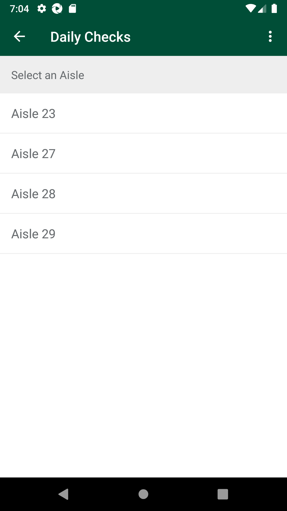
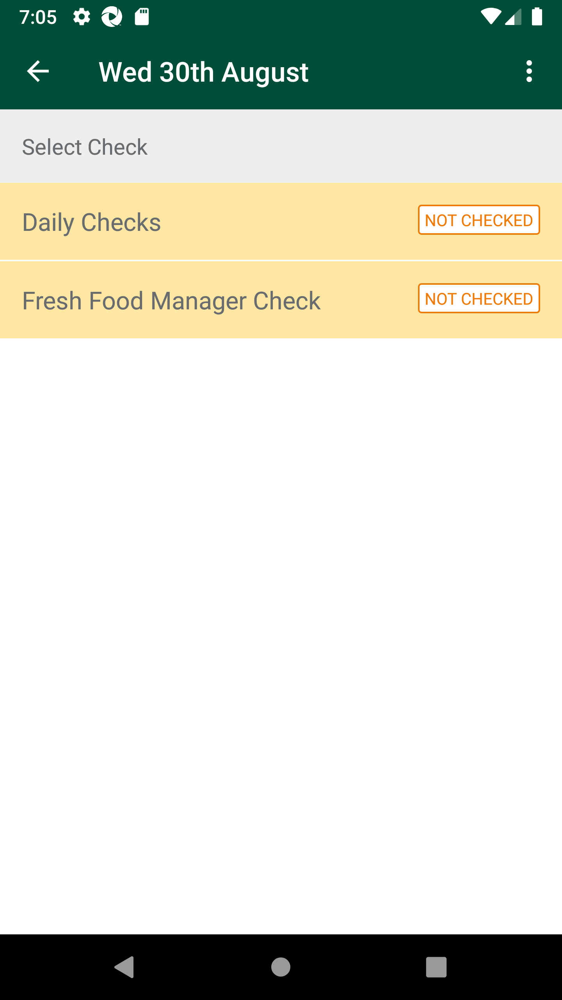

-
Verify Daily Schedule-Daily Checks in Fresh code check
17:35:27 PM / 39:44:969 Fail
Verify Daily Schedule-Daily Checks in Fresh code check
08.31.2023 17:35:27 08.31.2023 17:45:12 39:44:969 · #test-id=1@NewfccDailySchedule @regressionPassTO CHANGE THE DEVICE TIMINGS AS REQUIREDPassTO CHANGE THE DEVICE TIMINGS AS REQUIREDGiven I send the time "07" and mins "00" and meridiem "pm" and current date in listThen I Change timeThen I Change datePassUAT_27Verify Overdue schedule date User should be able to view in Daily Schedule module with status as 'Overdue'PassUAT_27Verify Overdue schedule date User should be able to view in Daily Schedule module with status as 'Overdue'When I enter Username and Password for SMA Collegue userAnd I click on login button for SMAThen I click on the main menu "Code Checking"Then I click on "Fresh Code Check"Then I click on "Daily Schedule"And I verify status as "OVERDUE"PassUAT_28Verify On current day User should be able to view list of 9 scheduled daysPassUAT_28Verify On current day User should be able to view list of 9 scheduled daysWhen I enter Username and Password for SMA Collegue userAnd I click on login button for SMAThen I click on the main menu "Code Checking"Then I click on "Fresh Code Check"Then I click on "Daily Schedule"And I verify list of nine schedule daysFailUAT_29Verify On current day User should be able to view Below list of checksFailUAT_29Verify On current day User should be able to view Below list of checksWhen I enter Username and Password for SMA Collegue userAnd I click on login button for SMAThen I click on the main menu "Code Checking"Then I click on "Fresh Code Check"Then I click on "Daily Schedule"And I select current day dateAnd I verify "Daily Checks" is displayedAnd I verify "Second Check" is displayedcom.morrisons.common.action.Hook.afterScenario(io.cucumber.java.Scenario)And I verify "Fresh Food Manager Check" is displayedStep skippedPassUAT_30Verify On current day User view list of menu for 'Daily Checks'PassUAT_30Verify On current day User view list of menu for 'Daily Checks'When I enter Username and Password for SMA Collegue userAnd I click on login button for SMAThen I click on the main menu "Code Checking"Then I click on "Fresh Code Check"Then I click on "Daily Schedule"And I select current day dateAnd I verify status as "NOT CHECKED"Then I click on "Daily Checks"And I verify "Critical Checks" is displayedAnd I verify "Fixture" is displayedAnd I verify "Promotions" is displayedAnd I verify "Warehouse" is displayedFailUAT_33Verify when user scan item in 'Fixture' location from any scheduled department/class/Subclass and perform 'Markdown' action and select expiry date as future date.FailUAT_33Verify when user scan item in 'Fixture' location from any scheduled department/class/Subclass and perform 'Markdown' action and select expiry date as future date.When I enter Username and Password for SMA Collegue userAnd I click on login button for SMAThen I click on the main menu "Code Checking"Then I click on "Fresh Code Check"Then I click on "Daily Schedule"And I select current day dateThen I click on "Daily Checks"Then I click on "Fixture"Then I click on "Aisle 0"com.morrisons.common.action.Hook.afterScenario(io.cucumber.java.Scenario)
Then I select "Bought In Bread 800g"Step skippedAnd I click on barcode entry ButtonStep skippedThen Enter "102369685" numberStep skippedAnd I click on spinner to select one of the action "Markdown"Step skippedAnd I enter markdown "2" for the productStep skippedAnd I click on CalendarStep skippedThen I select next 1 th dateStep skippedThen I click on Done ButtonStep skippedAnd I capture product detailsStep skippedAnd I click Log ProductStep skippedFailUAT_10Verify and Scan 'Long life Department' for 'Fixture' location perform 'Wastage' action and select expiry date as 'Fututre expiry date'.FailUAT_10Verify and Scan 'Long life Department' for 'Fixture' location perform 'Wastage' action and select expiry date as 'Fututre expiry date'.When I enter Username and Password for SMA Collegue userAnd I click on login button for SMAThen I click on the main menu "Code Checking"Then I click on "Fresh Code Check"Then I click on "Daily Schedule"And I select current day dateThen I click on "First Check"com.morrisons.common.action.Hook.afterScenario(io.cucumber.java.Scenario)
Then I click on "Fixture"Step skippedThen I click on "Aisle 0"Step skippedThen I select "White Bought in Bread 400g"Step skippedAnd I click on barcode entry ButtonStep skippedThen Enter "102376463" numberStep skippedAnd I click on spinner to select one of the action "Wastage"Step skippedAnd I enter markdown "2" for the productStep skippedAnd I click on CalendarStep skippedThen I select next 2 th dateStep skippedThen I click on Done ButtonStep skippedAnd I capture product detailsStep skippedAnd I click Log ProductStep skippedAnd I select "Charity - Out of Date" and ConfirmStep skippedFailUAT_55 Verify 'Warehouse' screen when 'Wastage' action is performed for scanned product for future expiry dateFailUAT_55 Verify 'Warehouse' screen when 'Wastage' action is performed for scanned product for future expiry dateWhen I enter Username and Password for SMA Collegue userAnd I click on login button for SMAThen I click on the main menu "Code Checking"Then I click on "Fresh Code Check"Then I click on "Daily Schedule"And I select current day dateThen I click on "First Check"com.morrisons.common.action.Hook.afterScenario(io.cucumber.java.Scenario)Then I click on "Warehouse"Step skippedAnd I click on barcode entry ButtonStep skippedThen Enter "105521988" numberStep skippedAnd I click on spinner to select one of the action "Wastage"Step skippedAnd I enter markdown "2" for the productStep skippedAnd I click on CalendarStep skippedThen I select next 1 th dateStep skippedThen I click on Done ButtonStep skippedAnd I capture product detailsStep skippedAnd I click Log ProductStep skippedAnd I select "Waste - Out of Date" and ConfirmStep skippedAnd I verify my product displayed in view listStep skippedFailUAT_56 Verify 'Warehouse' screen when 'Wastage' action is performed for scanned product for past expiry dateFailUAT_56 Verify 'Warehouse' screen when 'Wastage' action is performed for scanned product for past expiry dateWhen I enter Username and Password for SMA Collegue userAnd I click on login button for SMAThen I click on the main menu "Code Checking"Then I click on "Fresh Code Check"Then I click on "Daily Schedule"And I select current day dateThen I click on "First Check"com.morrisons.common.action.Hook.afterScenario(io.cucumber.java.Scenario)Then I click on "Warehouse"Step skippedAnd I click on barcode entry ButtonStep skippedThen Enter "105521988" numberStep skippedAnd I click on spinner to select one of the action "Wastage"Step skippedAnd I enter markdown "2" for the productStep skippedAnd I click on CalendarStep skippedThen I select next -2 th dateStep skippedThen I click on Done ButtonStep skippedAnd I capture product detailsStep skippedAnd I click Log ProductStep skippedAnd I select "Waste - Out of Date" and ConfirmStep skippedAnd I verify my product displayed in view listStep skipped
-
org.openqa.selenium.NoSuchElementException
1 tests
org.openqa.selenium.NoSuchElementException
1 failedStatus Timestamp TestName Fail 17:39:16 PM And I verify "Second Check" is displayed Verify Daily Schedule-Daily Checks in Fresh code check.UAT_29Verify On current day User should be able to view Below list of checks.And I verify "Second Check" is displayedFail 17:40:53 PM Then I click on "Aisle 0" Verify Daily Schedule-Daily Checks in Fresh code check.UAT_33Verify when user scan item in 'Fixture' location from any scheduled department/class/Subclass and perform 'Markdown' action and select expiry date as future date..Then I click on "Aisle 0"Fail 17:42:06 PM Then I click on "First Check" Verify Daily Schedule-Daily Checks in Fresh code check.UAT_10Verify and Scan 'Long life Department' for 'Fixture' location perform 'Wastage' action and select expiry date as 'Fututre expiry date'..Then I click on "First Check"Fail 17:43:18 PM Then I click on "First Check" Verify Daily Schedule-Daily Checks in Fresh code check.UAT_55 Verify 'Warehouse' screen when 'Wastage' action is performed for scanned product for future expiry date.Then I click on "First Check"Fail 17:44:31 PM Then I click on "First Check" Verify Daily Schedule-Daily Checks in Fresh code check.UAT_56 Verify 'Warehouse' screen when 'Wastage' action is performed for scanned product for past expiry date.Then I click on "First Check"
-
@NewfccDailySchedule
10 tests
@NewfccDailySchedule
4 passed 6 failedStatus Timestamp TestName Fail 17:35:27 PM Verify Daily Schedule-Daily Checks in Fresh code check Pass 17:35:27 PM TO CHANGE THE DEVICE TIMINGS AS REQUIRED Verify Daily Schedule-Daily Checks in Fresh code check.TO CHANGE THE DEVICE TIMINGS AS REQUIREDPass 17:37:31 PM UAT_27Verify Overdue schedule date User should be able to view in Daily Schedule module with status as 'Overdue' Verify Daily Schedule-Daily Checks in Fresh code check.UAT_27Verify Overdue schedule date User should be able to view in Daily Schedule module with status as 'Overdue'Pass 17:38:06 PM UAT_28Verify On current day User should be able to view list of 9 scheduled days Verify Daily Schedule-Daily Checks in Fresh code check.UAT_28Verify On current day User should be able to view list of 9 scheduled daysFail 17:38:44 PM UAT_29Verify On current day User should be able to view Below list of checks Verify Daily Schedule-Daily Checks in Fresh code check.UAT_29Verify On current day User should be able to view Below list of checksPass 17:39:37 PM UAT_30Verify On current day User view list of menu for 'Daily Checks' Verify Daily Schedule-Daily Checks in Fresh code check.UAT_30Verify On current day User view list of menu for 'Daily Checks'Fail 17:40:19 PM UAT_33Verify when user scan item in 'Fixture' location from any scheduled department/class/Subclass and perform 'Markdown' action and select expiry date as future date. Verify Daily Schedule-Daily Checks in Fresh code check.UAT_33Verify when user scan item in 'Fixture' location from any scheduled department/class/Subclass and perform 'Markdown' action and select expiry date as future date.Fail 17:41:35 PM UAT_10Verify and Scan 'Long life Department' for 'Fixture' location perform 'Wastage' action and select expiry date as 'Fututre expiry date'. Verify Daily Schedule-Daily Checks in Fresh code check.UAT_10Verify and Scan 'Long life Department' for 'Fixture' location perform 'Wastage' action and select expiry date as 'Fututre expiry date'.Fail 17:42:48 PM UAT_55 Verify 'Warehouse' screen when 'Wastage' action is performed for scanned product for future expiry date Verify Daily Schedule-Daily Checks in Fresh code check.UAT_55 Verify 'Warehouse' screen when 'Wastage' action is performed for scanned product for future expiry dateFail 17:44:01 PM UAT_56 Verify 'Warehouse' screen when 'Wastage' action is performed for scanned product for past expiry date Verify Daily Schedule-Daily Checks in Fresh code check.UAT_56 Verify 'Warehouse' screen when 'Wastage' action is performed for scanned product for past expiry date -
@timeChange
2 tests
@timeChange
2 passedStatus Timestamp TestName Pass 17:35:27 PM TO CHANGE THE DEVICE TIMINGS AS REQUIRED Verify Daily Schedule-Daily Checks in Fresh code check.TO CHANGE THE DEVICE TIMINGS AS REQUIREDPass 17:35:27 PM TO CHANGE THE DEVICE TIMINGS AS REQUIRED Verify Daily Schedule-Daily Checks in Fresh code check.TO CHANGE THE DEVICE TIMINGS AS REQUIRED -
@sma
16 tests
@sma
6 passed 10 failedStatus Timestamp TestName Pass 17:37:31 PM UAT_27Verify Overdue schedule date User should be able to view in Daily Schedule module with status as 'Overdue' Verify Daily Schedule-Daily Checks in Fresh code check.UAT_27Verify Overdue schedule date User should be able to view in Daily Schedule module with status as 'Overdue'Pass 17:37:31 PM UAT_27Verify Overdue schedule date User should be able to view in Daily Schedule module with status as 'Overdue' Verify Daily Schedule-Daily Checks in Fresh code check.UAT_27Verify Overdue schedule date User should be able to view in Daily Schedule module with status as 'Overdue'Pass 17:38:06 PM UAT_28Verify On current day User should be able to view list of 9 scheduled days Verify Daily Schedule-Daily Checks in Fresh code check.UAT_28Verify On current day User should be able to view list of 9 scheduled daysPass 17:38:06 PM UAT_28Verify On current day User should be able to view list of 9 scheduled days Verify Daily Schedule-Daily Checks in Fresh code check.UAT_28Verify On current day User should be able to view list of 9 scheduled daysFail 17:38:44 PM UAT_29Verify On current day User should be able to view Below list of checks Verify Daily Schedule-Daily Checks in Fresh code check.UAT_29Verify On current day User should be able to view Below list of checksFail 17:38:44 PM UAT_29Verify On current day User should be able to view Below list of checks Verify Daily Schedule-Daily Checks in Fresh code check.UAT_29Verify On current day User should be able to view Below list of checksPass 17:39:37 PM UAT_30Verify On current day User view list of menu for 'Daily Checks' Verify Daily Schedule-Daily Checks in Fresh code check.UAT_30Verify On current day User view list of menu for 'Daily Checks'Pass 17:39:37 PM UAT_30Verify On current day User view list of menu for 'Daily Checks' Verify Daily Schedule-Daily Checks in Fresh code check.UAT_30Verify On current day User view list of menu for 'Daily Checks'Fail 17:40:19 PM UAT_33Verify when user scan item in 'Fixture' location from any scheduled department/class/Subclass and perform 'Markdown' action and select expiry date as future date. Verify Daily Schedule-Daily Checks in Fresh code check.UAT_33Verify when user scan item in 'Fixture' location from any scheduled department/class/Subclass and perform 'Markdown' action and select expiry date as future date.Fail 17:40:19 PM UAT_33Verify when user scan item in 'Fixture' location from any scheduled department/class/Subclass and perform 'Markdown' action and select expiry date as future date. Verify Daily Schedule-Daily Checks in Fresh code check.UAT_33Verify when user scan item in 'Fixture' location from any scheduled department/class/Subclass and perform 'Markdown' action and select expiry date as future date.Fail 17:41:35 PM UAT_10Verify and Scan 'Long life Department' for 'Fixture' location perform 'Wastage' action and select expiry date as 'Fututre expiry date'. Verify Daily Schedule-Daily Checks in Fresh code check.UAT_10Verify and Scan 'Long life Department' for 'Fixture' location perform 'Wastage' action and select expiry date as 'Fututre expiry date'.Fail 17:41:35 PM UAT_10Verify and Scan 'Long life Department' for 'Fixture' location perform 'Wastage' action and select expiry date as 'Fututre expiry date'. Verify Daily Schedule-Daily Checks in Fresh code check.UAT_10Verify and Scan 'Long life Department' for 'Fixture' location perform 'Wastage' action and select expiry date as 'Fututre expiry date'.Fail 17:42:48 PM UAT_55 Verify 'Warehouse' screen when 'Wastage' action is performed for scanned product for future expiry date Verify Daily Schedule-Daily Checks in Fresh code check.UAT_55 Verify 'Warehouse' screen when 'Wastage' action is performed for scanned product for future expiry dateFail 17:42:48 PM UAT_55 Verify 'Warehouse' screen when 'Wastage' action is performed for scanned product for future expiry date Verify Daily Schedule-Daily Checks in Fresh code check.UAT_55 Verify 'Warehouse' screen when 'Wastage' action is performed for scanned product for future expiry dateFail 17:44:01 PM UAT_56 Verify 'Warehouse' screen when 'Wastage' action is performed for scanned product for past expiry date Verify Daily Schedule-Daily Checks in Fresh code check.UAT_56 Verify 'Warehouse' screen when 'Wastage' action is performed for scanned product for past expiry dateFail 17:44:01 PM UAT_56 Verify 'Warehouse' screen when 'Wastage' action is performed for scanned product for past expiry date Verify Daily Schedule-Daily Checks in Fresh code check.UAT_56 Verify 'Warehouse' screen when 'Wastage' action is performed for scanned product for past expiry date -
@regression
10 tests
@regression
4 passed 6 failedStatus Timestamp TestName Fail 17:35:27 PM Verify Daily Schedule-Daily Checks in Fresh code check Pass 17:35:27 PM TO CHANGE THE DEVICE TIMINGS AS REQUIRED Verify Daily Schedule-Daily Checks in Fresh code check.TO CHANGE THE DEVICE TIMINGS AS REQUIREDPass 17:37:31 PM UAT_27Verify Overdue schedule date User should be able to view in Daily Schedule module with status as 'Overdue' Verify Daily Schedule-Daily Checks in Fresh code check.UAT_27Verify Overdue schedule date User should be able to view in Daily Schedule module with status as 'Overdue'Pass 17:38:06 PM UAT_28Verify On current day User should be able to view list of 9 scheduled days Verify Daily Schedule-Daily Checks in Fresh code check.UAT_28Verify On current day User should be able to view list of 9 scheduled daysFail 17:38:44 PM UAT_29Verify On current day User should be able to view Below list of checks Verify Daily Schedule-Daily Checks in Fresh code check.UAT_29Verify On current day User should be able to view Below list of checksPass 17:39:37 PM UAT_30Verify On current day User view list of menu for 'Daily Checks' Verify Daily Schedule-Daily Checks in Fresh code check.UAT_30Verify On current day User view list of menu for 'Daily Checks'Fail 17:40:19 PM UAT_33Verify when user scan item in 'Fixture' location from any scheduled department/class/Subclass and perform 'Markdown' action and select expiry date as future date. Verify Daily Schedule-Daily Checks in Fresh code check.UAT_33Verify when user scan item in 'Fixture' location from any scheduled department/class/Subclass and perform 'Markdown' action and select expiry date as future date.Fail 17:41:35 PM UAT_10Verify and Scan 'Long life Department' for 'Fixture' location perform 'Wastage' action and select expiry date as 'Fututre expiry date'. Verify Daily Schedule-Daily Checks in Fresh code check.UAT_10Verify and Scan 'Long life Department' for 'Fixture' location perform 'Wastage' action and select expiry date as 'Fututre expiry date'.Fail 17:42:48 PM UAT_55 Verify 'Warehouse' screen when 'Wastage' action is performed for scanned product for future expiry date Verify Daily Schedule-Daily Checks in Fresh code check.UAT_55 Verify 'Warehouse' screen when 'Wastage' action is performed for scanned product for future expiry dateFail 17:44:01 PM UAT_56 Verify 'Warehouse' screen when 'Wastage' action is performed for scanned product for past expiry date Verify Daily Schedule-Daily Checks in Fresh code check.UAT_56 Verify 'Warehouse' screen when 'Wastage' action is performed for scanned product for past expiry date
Started
Aug 31, 2023 05:35:22 PM
Ended
Aug 31, 2023 05:45:13 PM
Features Passed
0
Features Failed
1
Features
Scenarios
Steps
Timeline
Tags
| Name | Passed | Failed | Skipped | Others | Passed % |
|---|---|---|---|---|---|
| @NewfccDailySchedule | 4 | 6 | 0 | 0 | 40% |
| @timeChange | 2 | 0 | 0 | 0 | 100% |
| @sma | 6 | 10 | 0 | 0 | 37.5% |
| @regression | 4 | 6 | 0 | 0 | 40% |